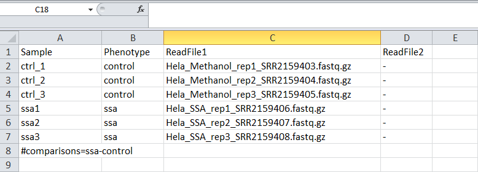
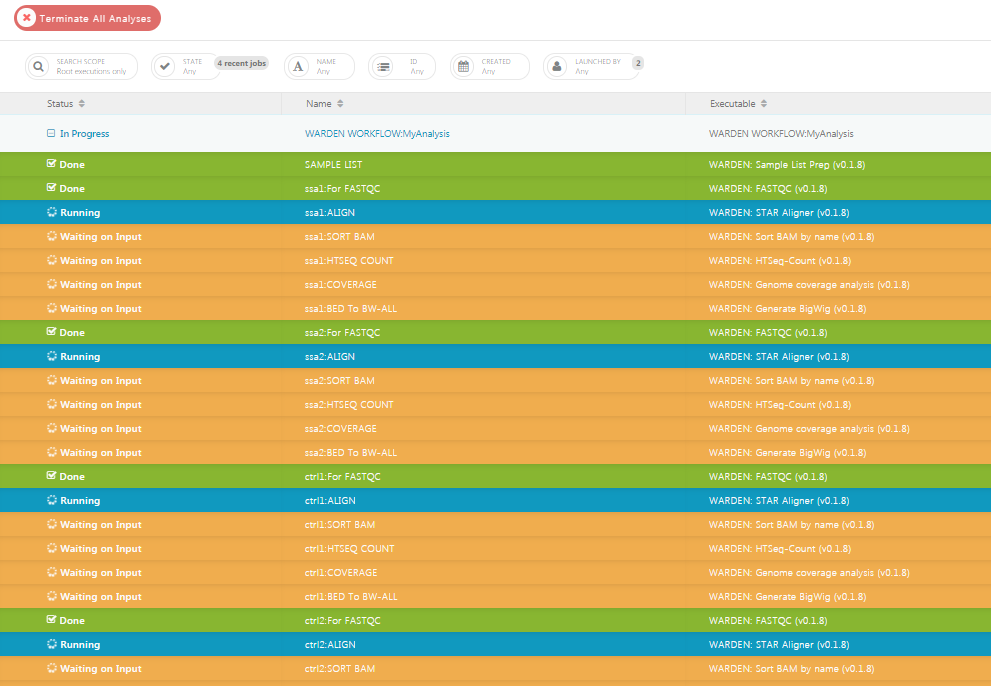
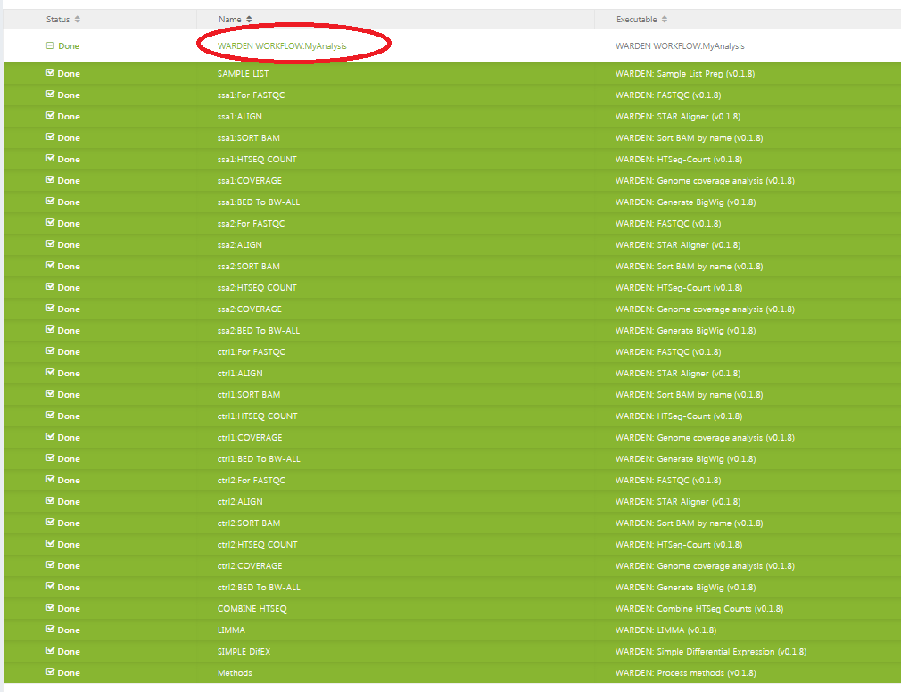
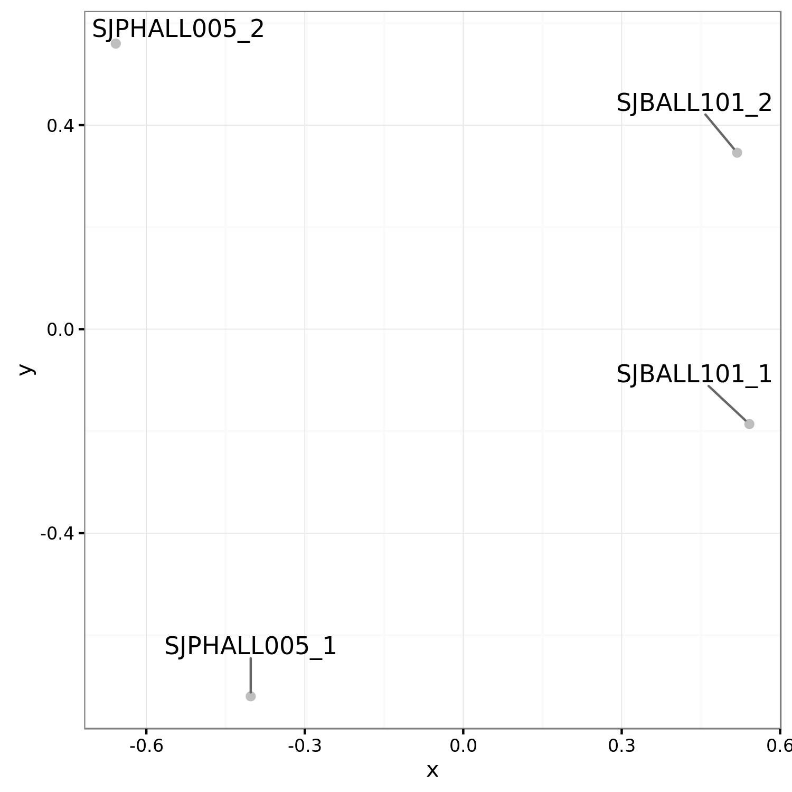

WARDEN Differential Expression Analysis
| Authors | Lance Palmer |
| Publication | N/A (not published) |
| Technical Support | Contact Us |
The WARDEN (Workflow for the Analysis of RNA-Seq Differential ExpressioN) software uses RNA-Seq sequence files to perform alignment, coverage analysis, gene counts and differential expression analysis.
Overview
Inputs
The WARDEN workflow requires 2 types of input files and along with two required parameters to be set. All other parameters are preset with sane defaults.
| Name | Type | Description | Example |
|---|---|---|---|
| FastQ files (required) | Input file(s) | Gzipped FastQ files generated by experiment | Sample1.fastq.gz, Sample2.fastq.gz |
| Sample sheet (required) | Input file | Sample sheet generated and uploaded by the user | *.txt |
Todo
Delete these if they are in the parameters below.
| Reference genome | Parameter | Supported reference genome (HG19, HG38, mm9, mm10, dm3, dm6) | HG38 | | Sequencing method | Parameter | Sequencing method of experiment (forward, reverse, unstranded) | forward |
Outputs
| Name | Description |
|---|---|
| FastQC Report | Quality control analysis by FastQC. |
| Aligned BAM | Aligned BAM files from STAR mapping. |
| Splice junctions | Splice junction information from STAR mapping. |
| Coverage files | bigWig (.bw) and BED (.bed) files detailing coverage. |
| Gene counts | Gene counts generated by HT-Seq count. |
| VOOM/LIMMA results | Pairwise comparisons of expression data. Requires at least 3 samples vs 3 samples. |
| Simple DE analysis | No statistical analysis, requires only a 1 samples vs 1 sample comparison. |
| MA/Volcano plots | Both of the above produce tabular outputs, MA plots and volcano plots. |
Process
- FastQ files generated by RNA-Seq are mapped to a reference genome using the STAR.
- HT-Seq count is used to assign mapped reads to genes.
- Differential expression analysis is performed using VOOM normalization of counts and LIMMA analysis.
- Coverage plots of mapped reads are generated as interactive visualizations.
Getting started
To get started, you need to navigate to the WARDEN tool page. You'll need to click the "Start" button in the left hand pane. This creates a cloud workspace in DNAnexus with the same name as the tool. After this, you will be able to upload your input files to that workspace.

Note
If you can't see the "Start" button, one of these two scenarios is likely the case:
- You see three buttons on the left sidebar instead of one. In this case, you've already clicked the "Start" button previously, and a cloud workspace has already been created for you. In this case, you're good! You can move on to the next section.
- If you cannot see any buttons on the left side, you probably have not logged in yet. If you see a sentence that says "Log in to launch this tool", simply login and try again.
If neither of these are the case and you still can't click "Start", contact us.
Uploading data
The WARDEN Differential Expression analysis pipeline takes Gzipped FastQ files generated by an RNA-Seq experiment as input. You can upload your input file(s) using the data transfer application or by uploading them through the command line. Both of the guides linked here will contain more details on how to upload data using that method, so we defer to those guides here.
Tip
If you plan to upload data through the St. Jude Cloud Data Transfer application (recommended), you can click the "Upload Data" button in the left panel. If you have not already downloaded the app, do so by clicking "Download app". Once you have the app, you can click "Open app" to open the app with the tool's cloud workspace already opened and ready to drag-and-drop files into it!
For more information, check out the data transfer application guide.
Sample sheet
Once your data is uploaded, you'll need to create a sample sheet which describes the relationship between case and control samples, phenotype/condition information, and the comparisons you would like to perform. The sample sheet is a tab-delimited text document that can be created in Microsoft Excel (recommended) or a text editor.
Note
You will need to upload your sample sheet in a similar manner as your FastQ files, so you can follow the same uploading instructions to achieve this.
Prepare using Microsoft Excel
Tip
Download the file_download sample excel spreadsheet as a starting point!
The final product for the excel spreadsheet will look like the screenshot below. If you create the sample sheet from scratch, please ensure the the columns are exactly in this order.

Sample rows
Each row in the spreadsheet (except for the last row, which we will talk about in the next section) corresponds to a sample with one or more FastQ files. You should fill in these rows based on your data and the guidelines below:
Guidelines
- The sample name should be unique and should only contain letters, numbers and underscores.
- The condition/phenotype column associates similar samples together. The values should contain only letters, numbers and underscores.
- ReadFile1 should contain forward reads (e.g.
*.R1.fastq.gzor*_1.fastq.gz). - ReadFile2 will contain reads in reverse orientation to ReadFile2
(e.g.
*.R2.fastq.gzor*_2.fastq.gz). - For single end reads a single dash ('-') should be entered in the ReadFile2 column.
Comparison row
The last line in the sample sheet is called the "comparison row". This
line specifies the comparisons to be done between conditions/phenotypes.
All pairwise combinations of the values in the "Phenotype" column can be
analyzed. To specify the comparisons, on a separate line, include #comparisons= followed be a comma delimited list of two conditions separated by a dash.
Example
The following lines are all valid examples.
#comparisons=KO-WT#comparisons=Condition1-Control,Condition2-Control#comparisons=Phenotype2-Phenotype1,Phenotype3-Phenotype2,Phenotype3-Phenotype1
Note
If a comparison has at least 3 samples for each condition/phenotype, VOOM/LIMMA will be run. A simple differential comparison will be run on all samples.
Finalizing the sample sheet
To finalize the sample sheet, save the Microsoft Excel file with whatever name you like. Save the file as an Excel Workbook with the .xlsx extension.
Prepare using a text editor
Tip
Download the file_download sample text file as a starting point!
Creating a sample sheet with a text editor is an option for advanced users. The process of creating a sample sheet with a text editor is the same as creating one with Microsoft Excel, with the small difference that you must manually create your columns using the tab character. Save the file with a .txt extension.
Running the tool
Note
The WARDEN tool operation is slightly different than the other pipelines because it accepts a variable number of samples. First, you will run a "bootstrapping" step that creates a custom executable for your analysis. Second, you will need to manually execute the generated workflow from the first step. This allows us to take advantage of many nice features, like check-pointing and cost reduction. Don't worry, we'll show you how to do this step by step below.
Once you've uploaded data to your cloud workspace, click "Launch Tool" on the tool's landing page. You will be redirected to the virtual cloud workspace with the workflow screen opened for you.

Hooking up inputs
Next, you'll need to hook up the FastQ files and sample sheet
you uploaded in the upload data section.
Click the FASTQ_FILES input field and select all FastQ files.
Next, click the sampleList input field and select the corresponding
samplesheet.

Selecting parameters
We now need to configure the parameters for the pipeline, such as reference
genome and sequencing method. You can access all of the available parameters
by clicking on the WARDEN WORKFLOW GENERATOR substep.
Parameter setup steps
- In the
Output Folderfield, select a folder to output to. You can structure your experiments however you like (e.g./My_Outputs) - In the
analysisNamefield, enter a prefix for all of the output files. This can be any value you want to use to remember this run. Be sure to use underscores instead of spaces here! - Select the
sequenceStandednessfrom the drop down menu. This information can be determined from the sequencing or source of the data. If you don't know what to put here, select "no". - Select the
Genomepulldown menu. Choose the appropriate box. - The LIMMA parameters can be left alone for most analyses. If you are an advanced LIMMA user, you can change the various settings exposed below the required parameters.
- When all parameters have been set, press the save button.

Starting the workflow
Once your input files are hooked up and your parameters are set, you should be able to start the workflow by clicking the "Run as Analysis..." button in the top right hand corner of the workflow dialog.
Tip
If you cannot click this button, please ensure that all of the inputs are correctly hooked up (see hooking up inputs).
If you're still have trouble, please contact us and include a screenshot of the workflow screen above.
The tool will begin running and will automatically take you to the Monitor page, where you should see that your workflow is "In Progress".

When the custom workflow has finished generating, the word 'Done' will appear in green in the status column. This indicates that the bootstrapping step has completed successfully.

Custom Workflow Process
- Wait for the workflow generator to finish.
-
Click on the WARDEN name in the name column.
-
You will now be on a page specific to the running of the workflow. On the left side, you will see the inputs you selected for the workflow generator. On the right side are the output files (including the generated workflow). Select the generated workflow as shown in the picture below.

-
You will now be within the output folder you specified earlier. Select the file that begins with 'WARDEN WORKFLOW:'

-
A workflow generated for your data will be presented to you. Select 'Run as analysis' in the upper right.

-
The workflow will initiate, and you will be brought to the 'Monitor' page. (Note to get back to this page, you can select 'Monitor' on one of the menu bars near the top ) Expand the the workflow progress be selecting the '+' sign next to 'In Progress'

-
As parts of the pipeline are run, you will see different tasks in different colors. Green means done, blue is running, orange is waiting, and red means error.

-
When done the status will be shown as 'Done'. Select the Workflow name under Status.

-
You will be brought to a page that show more information about the workflow analysis. Click on the output folder to go to the output.

-
The output folders will now be shown.

For a description of the output, please refer to Navigating Results.
Monitoring run progress
Once you have started one or more WARDEN runs, you can safely close your browser and come back later to check the status of the jobs. To do this, navigate to the tool's landing page. Next, click "View Results" then select the "View Running Jobs" option. You will be redirected to the job monitoring page. Each job you kick off gets one row in the Monitor section.
You can click the "+" on any of the runs to check the status of individual steps of the pipeline. Other information, such as time, cost of individual steps in the pipeline, and even viewing the job logs can accessed by clicking around the sub-items.
Tip
Power users can view the DNAnexus Job Monitoring Tutorial and the DNAnexus Command Line Tutorial for Job Monitoring for advanced capabilities for monitoring jobs.
Analysis of results
Each tool in St. Jude Cloud produces a visualization that makes understanding results more accessible than working with excel spreadsheet or tab delimited files. This is the primary way we recommend you work with your results. We also include the raw output files for you to dig into if the visualization is not sufficient to answer your research question.
Finding the raw results files
Navigate to the tool's landing page. In the left hand pane, click "View Results" then "View Results Files". You will be taken to the filesystem view your cloud workspace. This is similar to your the filesystem on your computer, and you can do many common operations such as deleting, renaming, and moving files.

Navigating Results
Note
Navigating to the raw results of your runs is the same for all pipelines. This guide will feature the rapid-rnaseq pipeline, but you can follow along for any tool.
Raw result files
Navigate to your tool's description page (for instance, Rapid RNA-Seq's description page is here). You should see a screen similar to the one in the screenshot below. In the left hand pane, select "View Results Files".

You should now be in the tool's workspace with access to files that you uploaded and results files that are generated. How/where the result files are generated are specific to each pipeline. Please refer to your individual pipeline's documentation on where the output files are kept.

Custom visualization results
Navigate to your tool's description page (for instance, Rapid RNA-Seq's description page is here). You should see a screen similar to the one in the screenshot below. In the left hand pane, select "Visualize Results".

You should now be in the tool's workspace with access to files that you uploaded and results files that are generated. How/where the result files are generated are specific to each pipeline. Please refer to your individual pipeline's documentation on where the output files are kept.

Interpreting results
The complete output file specification is listed in the overview section of this guide. Here, we will discuss each of the different output files in more detail.
- Predicted gene fusions: The putative gene fusions will be
contained in the file
[SAMPLE].final_fusions.txt. This file is a tab-delimited file containing many fields for each of the predicted SV. The most important columns are the following.
| Field Name | Description |
|---|---|
sample |
Sample name |
gene* |
Gene name |
chr* |
Chromosome name |
pos* |
Genomic Location |
ort* |
Strand |
reads* |
Supporting reads |
medal |
Estimated pathogenicity assessment using St. Jude Medal Ceremony |
- Coverage file: A standard bigWig file used to describe genomic read coverage.
- Splice junction read counts: A custom file format describing the junction read counts. The following fields are included in the tab-delimited output file.
| Field Name | Description |
|---|---|
junction |
Splice junction in the TCGA format "chrX:start:+,chrX:end,+". "start" and "end" are the 1-based position of the last mapped nucleotide before the skip and the first mapped nucleotide after the skip (i.e. the last base of the previous exon and the first base of the next exon). Note that in .bed output these coordinates will be different, see the .bed output section below. The "+" is currently hardcoded, though this may change in the future. |
count |
Raw count of reads supporting the junction. During correction counts for ambiguous junctions can be combined, though obviously these additional reads will not be visible in the raw BAM file. |
type |
Either "known" (matching a reference junction) or "novel" (not observed in the reference junction collection). |
genes |
Gene symbols from the junction calling process. These still need work in the raw junction calling process, it's recommended to use the "annotated" output files instead which assign matching HUGO gene symbols based on the UCSC refGene table. |
transcripts |
List of known transcript IDs matching the junction. |
qc_flanking |
Count of supporting reads passing flanking sequence checks (junctions observed adjacent to read ends require 18+ nt of flanking sequence, otherwise 10+ nt). |
qc_plus |
Count of supporting reads aligned to the + strand. |
qc_minus |
Count of supporting reads aligned to the - strand. |
qc_perfect_reads |
Count of supporting reads with perfect alignments (no reference mismatches of quality 15+, indels, or soft clips). |
qc_clean_reads |
Count of supporting reads whose alignments are not perfect but which have a ratio of <= 5% of reference mismatches of quality 15+, indels, or soft clips relative to the count of aligned bases on both the left and right flanking sequence. Note: qc_clean_reads does NOT include qc_perfect_reads: to get a count of "perfect plus pretty good" reads the two values must be added together. |
Primary Results
Alignment statistics
Several files should be examined initially to determine the quality of the results. alignmentStatistics.txt shows alignment statistics for all samples. This file is a plain text tab-delimited file that can be opened in Excel or a text editor such as Notepad++. This file contains information on the total reads per sample, the percantage of duplicate reads and the percentage of mapped reads. An example of this file is below. (Within the DNAnexus output directory structure, these files will be in the COMBINED_FLAGSTAT directory.)

Multidimensional scaling (MDS) Plot
The second set of files to look at are the Multidimensional scaling (MDS) plots (https://en.wikipedia.org/wiki/Multidimensional_scaling) using the plotMDS function within LIMMA. Similar to PCA, these graphs will show how similar samples are to each other. There are different sets of MDS plots. For comparisons where there are 3 or more samples per condition, an MDS plot using Voom (Limma) normalized values are generated. An example can be seen below. These files will be labeled mdsPlot.png. For all comparisons, regardless of sample size, and MDS plot will also be generated with Counts per million (CPM) normalized gene counts. These files will be labeled mdsPlot.normCPM.png. (Within the DNAnexus output directory structure, these files will be in the LIMMA directory.)

MDS plot from just CPM normalized data.

ProteinPaint Visualizations
Several files on DNAnexus allow the data to be viewed in the Protein Paint viewer. (Note: We plan to have links downloaded in the future to allow the viewing of these files off of DNAnexus.)
LIMMA differential expression viewer
Within LIMMA/VIEWERS direcory (note if no comparisons meet the 3 sample condition, the LIMMA folder will not exist), there will be a viewer file for each valid comparison ( *results..txt.viewer**). Simply select the file and press 'Launch viewer' in the lower right. A viewer will pop up showing both the MA Plot and Volcano plot. By moving the mouse over a circle, the circle will hilight and the corresponding gene on the other graph will also hilight. Additional information about the gene and its expression values will also be shown. One can also type in multiple gene symbols in the provided text box. By pressing 'Show gene labels' all these genes will show up on the plots.

Simple differential expression viewer
There will also be a viewer for the simple differential expresssion analysis in SIMPLE_DIFEX/VIEWERS. The P-value for the results have all been set to 1, so the volcano plot will not be relevant.
bigWig viewer
In the BIGWIG_VIEWER directory there will be a bigwigViewer file. Select this file and then 'Launch viewer'. A graph of coverage for the genome should be visible.
Secondary Results
Interactive MA/Volcano Plots
In addition to viewing the MA and volcano plots through the visualization tool
Differential expression results
Other useful differential expression results will be downloaded by the desktop app. This included tabular output from the differential expression analysis. For each comparison with three or more samples per condition, results.*.txt will be produced.
GSEA.input.txt and GSEA.tStat.txt
Input files that can be used for GSEA analysis. The tStat file is preferred for a more accurate analysis, but will not give a heatmap diagram. - (Within the DNAnexus output directory structure, these files will be in the LIMMA directory.)
-
For plain text results from the simple differential expresison analysis, the files will be named
simpleDE.*.txt. (Within the DNAnexus output directory structure, these files will be in the SIMPLE_DIFEX directory.) -
Prelabelled MA and volcano plots are provided for the analysis. These files are labeled
maPlot.*.pngandvolcanoPlot.*.pngwhere*is the comparison (e.g. ko_vs_wt) -
The MA plot shows the average expression of the gene on the X-axis, and Log2 fold change between condition/phenotype is on the Y-axis (if the name is for example maPlot.condition2-condition1.png then the fold change would represent condition1 minus condition2). Each gene is represented by a circle. The top 20 genes (by p-value) are identified on the plot. The genes are color coded by the chosen multiple testing correction method (False Discovery Rate (FDR) by default. An exmaple MA plot can be seen below. (Within the DNAnexus output directory structure, these files will be in the LIMMA directory.)

The volcano plot shows the Log2Fold change between the conditions on the X-axis, and the -Log10 of the multiple testing corrected P-value on the Y-axis.

An MA plot is generated for all comparisons regardless of number of
samples. This is the simpleDEPlot.*.png no statistics are shown
and genes are not labeled. (Within the DNAnexus output directory structure, these files will be in the SIMPLE_DIFEX directory.)
Differential analysis input
Inputs and commands are provided for rerunning differential expression analysis on ones own computer. The R commands used for the analysis are found in voomLimma.R. An experienced R user can rerun the analysis with any desired changes. This analysis requires the input countFile.txt which contains counts per genes, the Rparameters.txt file containing input parameters, and a processed sample list file sampleList.txt
(Within the DNAnexus output directory structure, these files will be in the LIMMA directory.)
The input for the simple differential analysis expression will be Rparameters_simple.txt, simpleDE.R, countFile.txt and sampleList.txt. countFile.txt and sampleList.txt are the same files used by the LIMMA analysis.
(Within the DNAnexus output directory structure, these files will be in the SIMPLE_DIFEX directory.)
Coverage results
bigWig files will be generated for use in genome browsers (such as IGV http://software.broadinstitute.org/software/igv/). For each smaple, multiple bigWig files will be found. For all types of sequencing strandedness, there will be bigWig files labelled, *.sortedCoverageFile.bed.bw where '' is the sample name. For stranded data there will also be*.sortedPosCoverageFile.bed.bw* and *.sortedNegCoverageFile.bed.bw which contains coverage information for the positive and negative strand of the genome.
(Within the DNAnexus output directory structure, these files will be in the BIGWIG directory.)
Quality Control Results (FastQC)
Within the FastQC directory, foreach sample and read direction there will be an html file and a zip file (*.FastQc.html *.FastQc.zip where '*' is the base FastQ name), containing results from FastQTC. For the average user the html file is sufficient. This file can give some basic statistics on the quality of the data.
(Within the DNAnexus output directory structure, these files will be in the FastQC directory.)
BAM alignment files
There are two BAM files generated per sample that contain mapping information for all reads. The first is labeled *.Aligned.sortedByCoord.dup.bam where '' is the sample name. The BAM file is sorted by coordinates and has duplicates marked. The second file is*.Aligned.toTranscriptome.out.bam* and contains reads mapped to transcripts.
(Within the DNAnexus output directory structure, these files will be in the ALIGN directory.)
Chimeric reads and junction files
Additional files created by STAR are provided. More information on these files can be found at http://labshare.cshl.edu/shares/gingeraslab/www-data/dobin/STAR/STAR.posix/doc/STARmanual.pdf. *.SJ.out.tab contain splice junction information. Fusion detectino files are labelled *.Chimeric.out.bam and *.Chimeric.out.junction.
(Within the DNAnexus output directory structure, these files will be in the ALIGN directory.)
FPKM and count files (per sample)
Per sample files containing FPKM and raw count values for each gene can be found in *.fpkm.txt and *.htseq_counts.txt where '*' is the sample name.
(Within the DNAnexus output directory structure, these files will be in the NOTE FIND OUT WHICH DIRECTORY directory.)
Methods Files
A more human readable explanation is found in methods.docx. Detailed documentation can be found in methods.txt
(Within the DNAnexus output directory structure, these files will be in the METHODS directory.)
Auxilary Files
This section describes the files that exist within the DNAnexus output folder. Most of these files will not be of interest to the average user. However, interactive viewers are describe in LIMMA differential expression viewer and Simple differential expression viewer.
The output will be divided into multiple folders. The results being the most useful will be the differential expression analysis results in the LIMMA and SIMPLE_DIFEX folders. Bigwig files for viewing read coverage will be in the BIGWIG folder. Other folder contain different types of data and are explained in further detail below.
The following description of files is sorted by their output directory.
ALIGN
This directory contains the BAM files described in BAM alignment files and the chimeric and junction files are described in Chimeric reads and junction files. In adition there are 2 log files. *Log.final.out has relevant statistics for the alignemnt. The *.Log.out file just contains a log of the analysis run, including input parameters. Per sample FLAGSTAT results are found in *.flagStatOut.txt. These flagstat files are combined into the file alignmentStatistics.txt described in Initial analysis of results. Finally the ALIGN directory has multiple .starAlign.methods.txt files. These files can be ignored as they are summarized in the finalmethods.docx* and methods.txt files described in Methods Files.
BIGWIG
All of the files here are described in section Coverage results. The bgToBw.methods.txt files can be ignored as they are summarized in the files described in Methods Files.
BIGWIG_VIEWER
See bigWig viewer
COMBINED_FLAGSTAT
Todo
Describe combined flagstat.
COMBINED_HTSEQ
Used for input in differential expression analysis. The combineCountFile.txt is the same as countFile.txt described in Differential analysis input
COVERAGE
BED graph files used to generate bigWig files are here.
FastQC
See Quality Control Results (FastQC)
HTSEQ
Per-sample HTSEQ-count results (*.htseq_counts.txt) and FPKM results (*.fpkm.txt). Temporary methods files are found as *.htseq-count.methods.txt
LIMMA
mdsPlot.png, maPlot..png,volcanoPlot..png are described in Initial analysis of results
results..txt,GSEA.input..txt and *GSEA.tStat..txt** are describe in Differential expression results
voomLimma.R, countFile.txt, Rparameters.txt, and sampleList.txt are described in Differential analysis input
See LIMMA differential expression viewer for a description of the VIEWERS directory.
Other files in the LIMMA directory include contrastFiles.txt contrastsFile.txt, and limmaSampleList.txt which are used internally. limmaMethods.txt is an intermediate file describing methods. Out.tar.gz is used for testing purposes. The sessionInfo.txt file describe the R session working parameters and modules loaded. meanVariance.png is a plot for assessing quality of count data (https://genomebiology.biomedcentral.com/articles/10.1186/gb-2014-15-2-r29)
METHODS
The files here are described in Methods Files.
SAMPLELIST
These files are used internally by the pipeline.
SIMPLE_DIFEX
mdsPlot.normCPM.png and *simpleDEPlot..png** are described in Initial analysis of results
*simpleDE..txt** are describe in Differential expression results
simpleDE.R, countFile.txt, Rparameters_simple.txt, and sampleList.txt are described in Differential analysis input
See Simple differential expression viewer for a description of the VIEWERS directory.
Other files in the SIMPLE_DIFEX directory include contrastFiles.txt contrastsFile.txt, and limmaSampleList.txt which are used internally. simpleDifEx.methods.txt is an intermediate file describing methods. Out.tar.gz is used for testing purposes. The sessionInfo.txt file describe the R session working parameters and modules loaded.
Known Issues
Adapter contamination
This pipeline does not, at present, remove adapter sequences. If the sequencing library is contaminated with adapters, CICERO runtimes can increase exponentially. We recommend running FastQ files through a QC pipeline such as FastQC and trimming adapters with tools such as Trimmomatic if adapters are found.
High coverage regions
Certain cell types show very high transcription of certain loci, for example, the immunoglobulin heavy chain locus in plasma cells. The presence of very highly covered regions (typically 100,000-1,000,000+ X) has an adverse effect on CICERO runtimes. Presently, we have no good solution to this problem as strategies such as down-sampling may reduce sensitivity over important regions of the genome.
Interactive Visualizations Exon vs Intron Nomenclature
When a codon is split over a fusion gene junction, the annotation software marks the event as intronic when really, the event should be exonic. We are working to fix this bug. In the mean time, if a fusion is predicted to be in frame but the interactive plot shows "intronic", we suggest the user blat the contig shown just below to clarify if the true junction is either in the intron or exon.
Frequently Asked Questions
None yet! If you have any questions not covered here, feel free to reach out on our contact form.